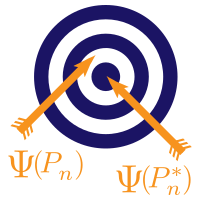

欢迎
Targeted Learning in R · tlverse 官方手册中译
来源：Targeted Learning in R: Causal Data Science with the
tlverseSoftware Ecosystem，作者 Mark van der Laan、Jeremy Coyle、Nima Hejazi、Ivana Malenica、Rachael Phillips、Alan Hubbard，采用 CC BY 4.0 许可。 本页为中文翻译，非原文；依 CC BY 4.0 保留原作者署名与许可证声明，并标明本页是经过修改（翻译）的版本。 原作品按「现状」提供，原作者不附任何明示或默示的担保（见 CC BY 4.0 第 5 节免责声明）；译文中的任何疏漏由译者负责，不代表原作者观点。 译自源码仓库 tlverse/tlverse-handbook 修订2931693（2024-09-21）。 原书代码块、公式与引用键按原文保留；原书用于生成 bookdown 构建环境表的代码块依赖上游仓库的DESCRIPTION，在本站无意义，已略去。
欢迎
《Targeted Learning in R：用 tlverse 软件生态做因果数据科学》是一本完全可复现的开源电子手册，讲解如何借助 tlverse 生态提供的软件栈，在实践中运用靶向学习（Targeted Learning）方法论。本书尚处草稿阶段，公开发布是为了征求社区意见。如需查阅或参与贡献，请访问 GitHub 仓库。


内容概览
本手册的内容既可作为应用研究的参考指南，也可用于讲授短期课程，展示靶向学习统计范式的成功应用。每一部分都引入一组不同的因果推断问题——通常由一个案例研究引出——并配以相应的统计方法论和开源软件，用来评估所关心的科学（因果）论断。目前的材料包括：
- 动机：我们为什么需要一场统计学革命
- 路线图与入门案例研究：WASH Benefits 孟加拉国数据集
tlverse软件生态导论- 用
origami包做交叉验证 - 用
sl3包做集成机器学习 - 用
tmle3包做面向因果推断的靶向学习 - 最优处理方案与
tmle3mopttx包 - 随机化处理方案与
tmle3shift包 - 用
tmle3mediate包做因果中介分析 - 尾声：我们为什么需要一场统计学革命
本书不做什么
本书不着力于对现代统计方法论或靶向学习的最新进展做技术上高度精深的深入阐述。我们的目标是把这些前沿统计技术的关键细节讲得清晰、完整而直观，同时避免那些额外细节（例如数学上过于小众的理论论证）带来的认知负担。我们希望这里的讲解能成为一份连贯的参考资料，让研究者——无论是应用方法学家还是领域专家——都能够以高效服务于自身科学目标的方式，用上靶向学习的核心统计工具。若想读到靶向学习领域中某些主题在数学上更精深、技术细节更充分的论述，建议有兴趣的读者酌情参阅 van der Laan 和 Rose (2011) 和 van der Laan 和 Rose (2018) 等诸多著作。因果推断、机器学习与非参数／半参数统计理论的一手文献中，包含了靶向学习及相关领域的许多最新进展。至于因果推断的背景知识，Hernán 和 Robins (2022) 是一份不错的现代入门参考。
关于作者
Mark van der Laan
Mark van der Laan 是加州大学伯克利分校生物统计学与统计学教授，并任伯克利靶向机器学习与因果推断中心联合主任。他的研究兴趣包括计算生物学中的统计方法、生存分析、删失数据、适应性设计、靶向最大似然估计、因果推断、数据自适应的基于损失的学习，以及多重检验。他的研究团队发展了半参数模型中基于交叉验证的、基于损失的超级学习（super learning），把它作为估计无穷维参数（例如非参数密度估计，以及在删失与非删失数据下做预测）的通用最优工具。在此基础上，该团队又发展了针对数据生成分布某个目标参数的靶向最大似然估计，使之成为在任意半参数与非参数模型下进行统计推断和因果推断的通用最优方法论。自 2017 年年中起，Mark 的团队把一部分精力投入到为靶向学习开发一套集中、有原则的软件工具，也就是 tlverse。
Jeremy Coyle
Jeremy Coyle 博士是一名数据科学与统计编程顾问，目前主导着催生了 tlverse 这一 R 包生态及相关软件工具的开发工作。Jeremy 于 2017 年在加州大学伯克利分校获得生物统计学博士学位，主要由 Alan Hubbard 指导。
Nima Hejazi
Nima Hejazi 是哈佛大学陈曾熙公共卫生学院生物统计学助理教授。他在加州大学伯克利分校获得生物统计学博士学位，师从 Mark van der Laan 与 Alan Hubbard，此后获得美国国家科学基金会数学科学博士后研究基金。Nima 的研究兴趣融合了因果推断、机器学习、非参数与半参数推断以及计算统计学，近期侧重的方向包括因果中介分析、在有偏的结局依赖抽样设计下的有效估计，以及面向因果机器学习的筛法（sieve）估计。他的方法学工作主要源于在传染病临床试验与观察性研究、传染病流行病学以及计算生物学方面的科研合作。Nima 同样热衷于高性能统计计算，以及面向应用统计与统计数据科学的开源软件设计。
Ivana Malenica
Ivana Malenica 是哈佛大学统计系博士后研究员，同时是哈佛数据科学计划的 Wojcicki and Troper 数据科学学者。她在加州大学伯克利分校获得生物统计学博士学位，师从 Mark van der Laan，期间曾任伯克利数据科学研究所学者以及美国国立卫生研究院生物医学大数据学者。她的研究兴趣涵盖非参数／半参数理论、因果推断与机器学习，尤其关注个体化健康与存在依赖结构的情形。她目前的工作大多涉及带时间依赖与网络依赖的因果推断、在线学习、最优个体化处理、强化学习，以及适应性序贯设计。
Rachael Phillips
Rachael Phillips 是生物统计学博士生，由 Alan Hubbard 与 Mark van der Laan 指导。她拥有生物统计学硕士、生物学理学士与数学文学士学位。作为靶向学习的学习者，Rachael 把因果推断、机器学习与统计理论结合起来，以统计上的把握去回答因果问题。她的研究动力来自医疗健康领域中的现实问题，尤其关注临床算法框架与指南。与此相关，她也关注实验设计、人机交互，以及统计分析的预先设定、自动化与可复现性，还有开源软件。
Alan Hubbard
Alan Hubbard 是加州大学伯克利分校生物统计学教授，现任伯克利公共卫生学院生物统计学部主任、伯克利 SuperFund 研究项目数据分析核心负责人，并任伯克利靶向机器学习与因果推断中心联合主任。他当前的研究兴趣包括因果推断、变量重要性分析、统计机器学习、数据自适应的统计目标参数的估计与推断，以及靶向最小损失估计。他所在团队的研究通常由计算生物学、流行病学与精准医学中的应用问题驱动。
学习资源
要有效使用本手册，读者不必是训练有素的统计学家，也能着手理解并应用这些方法。不过，我们强烈建议读者先理解一些基本统计概念，例如混杂、概率分布、置信区间、假设检验与回归。数理统计的高阶知识可能有帮助，但并非必需。熟悉 R 编程语言则是必要的。我们还建议读者对因果推断有入门程度的了解。
关于学习 R 编程语言，我们推荐以下（免费）入门资源：
- Software Carpentry 的 Programming with
R - Software Carpentry 的
Rfor Reproducible Scientific Analysis - Garret Grolemund 与 Hadley Wickham 的
Rfor Data Science
关于因果推断的一般性现代入门，我们推荐：
- Miguel A. Hernán 与 James M. Robins 的 Causal Inference: What If（2022）
- Jason A. Roy 在 Coursera 上的 A Crash Course in Causality: Inferring Causal Effects from Observational Data
欢迎推荐资源！
想出一份力？
我们非常欢迎关于本书的任何反馈。欢迎提交 issue；若发现笔误，也欢迎直接提 Pull Request。
可复现性
tlverse 软件生态是一个仍在扩充的软件包集合，其中若干包尚处软件生命周期的早期阶段。开发团队会尽力维持向后兼容。等这项工作完成之后，会把生成本书所用的 tlverse 各包的具体版本存档并打上标签。